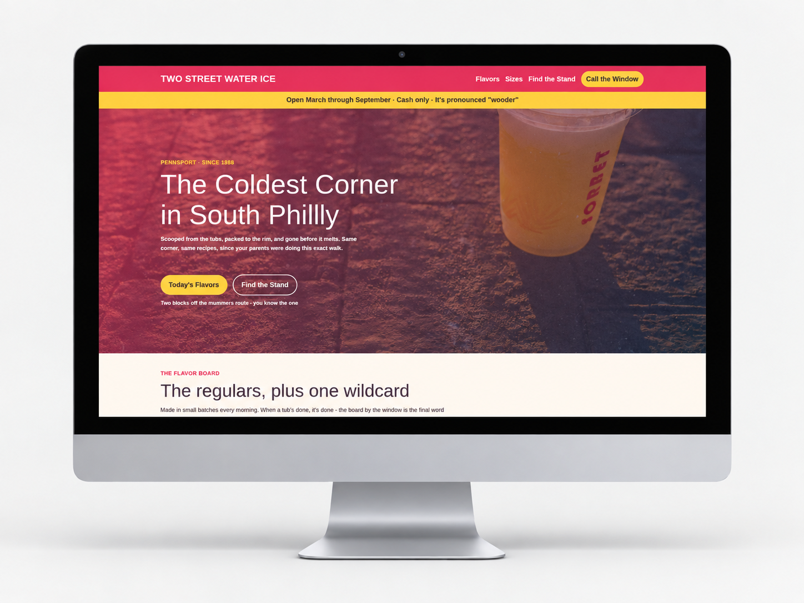
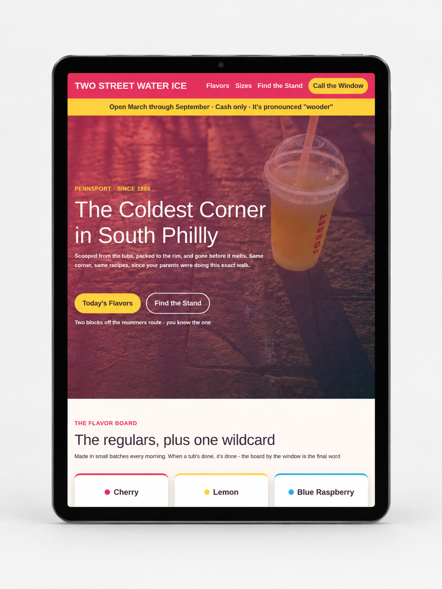
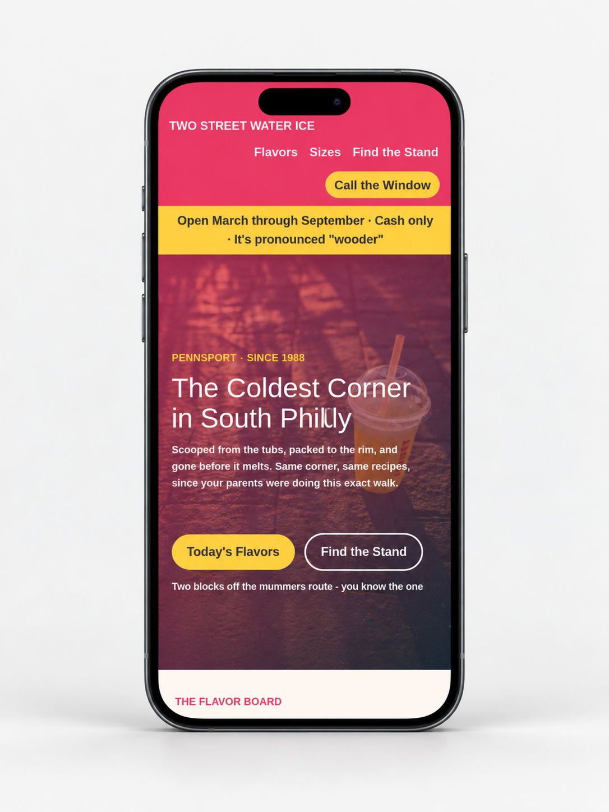
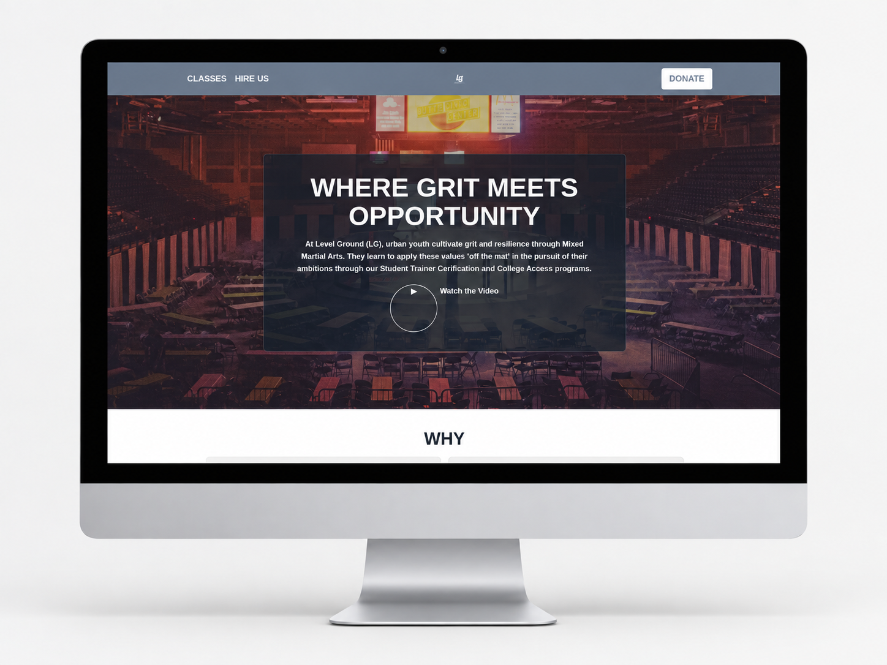
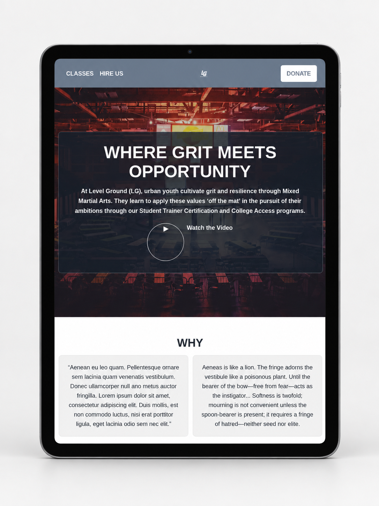
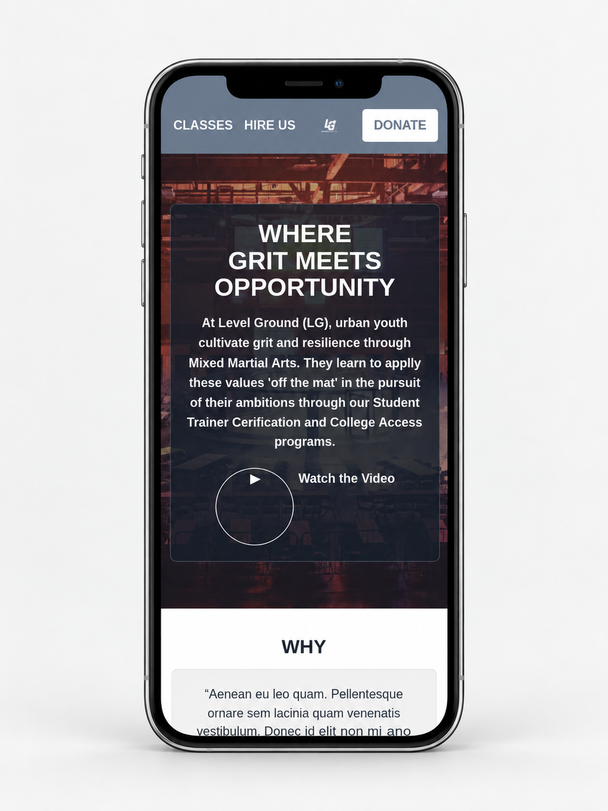
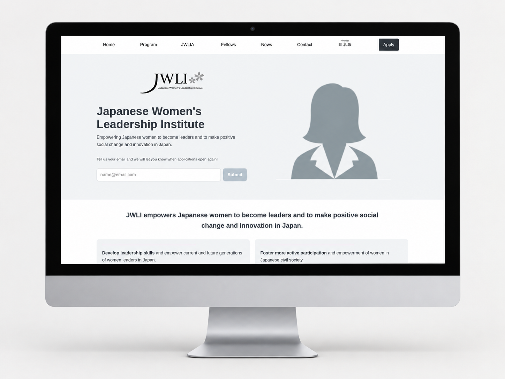
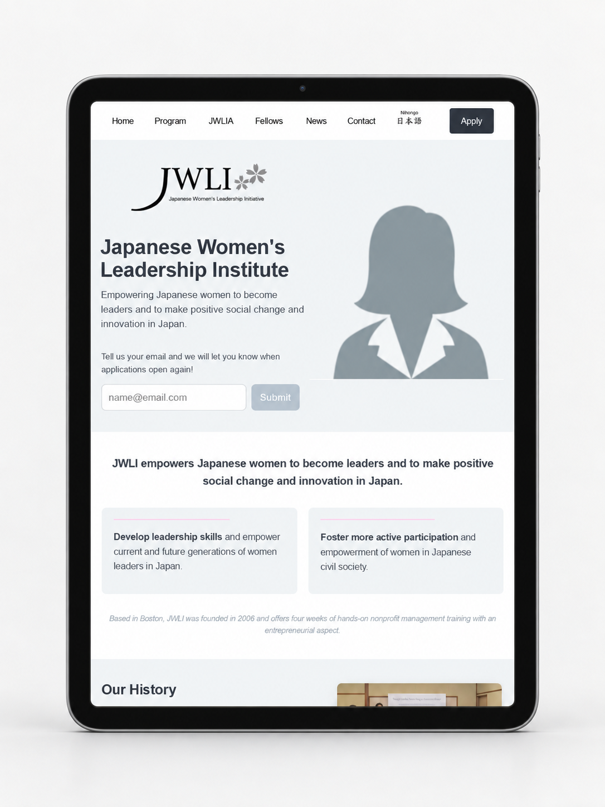
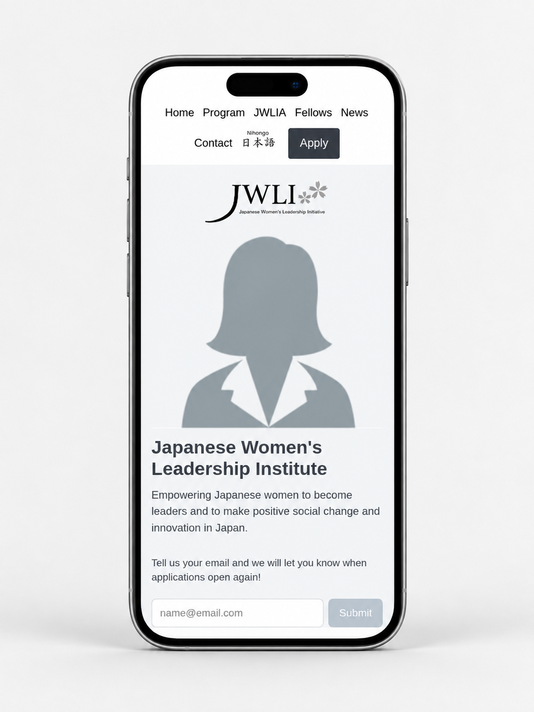

Niles Lee-Smith
Software Developer
Focused on full-stack web development and building web applications.

About
Before moving into software development, I worked in finance and operations. A lot of that work involved repetitive processes, and I kept finding ways to make them easier and more efficient. That led me to programming and automation, including projects that cut workflow completion times by up to 95%. I also worked on more technology-focused initiatives, including a smart-contract proof of concept using Daml and Canton.
These days, I'm focused on building full-stack web applications. I enjoy working through practical problems and figuring out how software can make things simpler for the people using it. My background in operations and working with stakeholders is still a big part of how I approach that work.
Projects
Two Street Water Ice
A responsive website for a South Philadelphia water-ice business, featuring flavors, sizes, and information for visiting the stand. The design uses colorful visuals, custom CSS styling, and layouts that adapt across screen sizes.
Take A Look


Level Ground
A website for a community organization that uses mixed martial arts and educational programs to support young people. The layout brings together the organization's mission, programs, and opportunities to get involved, using prominent visual sections and navigation to help visitors explore the content.
Take A Look


Japanese Women’s Leadership Initiative (JWLI)
A responsive website presenting the programs, history, and leadership of an organization supporting women in Japan. It organizes a larger amount of information through distinct content sections, images, multi-column layouts, navigation, and form interfaces.
Take A Look


Sensei Kubo
Let's be honest. You're here for the dog pictures.


Contact
Interested in connecting or discussing an opportunity? Feel free to reach out.